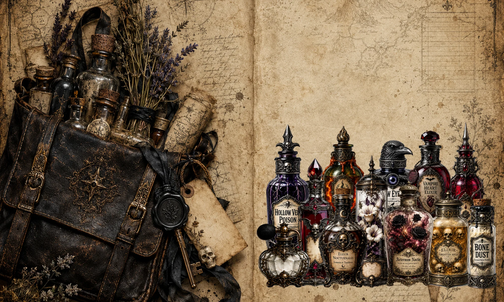

Coven 1692 - Witchcraft House - Loja 446
Galeria do Rock - Av. São João, 439 - República, São Paulo - Loja 446 - 3 andar
Horário: de Terça a Sábado das 10:00 as 18:00
Welcome to Salem !
Nenhum frasco responde a “”.
Tente uma nota (baunilha, jasmim), uma família (gourmand, cítrico) ou a casa que inspirou a releitura (Dior, Tom Ford). Se preferir, pergunte pelo WhatsApp ↗
House of Witchcraft
& Hoodoo — Apothecary
São Paulo
desde 2020
Nº 28 / 56 Lilith — Black Vanilla Uma baunilha adulta, que não pede licença.
A perfumaria Coven nasceu em 2020. Todos os perfumes são produzidos com essências e blends importados, vegan & cruelty free. Prezamos pela qualidade dos perfumes desde a matéria prima até a maceração e nascimento da fragrância.
Temos em nosso catálogo perfumes autorais e inspirações. Em nossas inspirações, usamos o caminho olfativo dos perfumes renomados de grandes casas, acrescentando ou acentuando notas e acordes. Criamos releituras.
A nossa proposta e identidade visual é resgatar mitos antigos, lendas esquecidas e a essência da literatura gótica. Das sombras dos contos de fadas aos segredos de deuses, bruxas e daemons, transformamos o arcano em arte.
Criamos para quem não teme a escuridão.
“Mergulhamos no ocultismo para dar vida nova ao invisível”
Cada frasco, cor e nome é escolhido meticulosamente para criar uma sinergia perfeita entre aroma e mensagem. Na Coven, perfumar-se é um ritual: é a sua forma de vestir a fragrância, evocando a atmosfera do extraordinário.
Nascemos com o propósito de ser um espaço pequeno, acolhedor e autêntico, inspirado no charme misterioso das lojas de Salem e New Orleans. Por termos um processo estritamente artesanal, a reposição dos nossos perfumes é contínua, mas respeita sempre o tempo de maceração que assegura a qualidade da fragrância.
Da mesma forma, os nossos sabonetes, hidratantes, óleos bifásicos, incensos e demais criações são produzidos sob encomenda ou em pequenos lotes limitados, conforme o estoque do momento. Por isso, convidamos sempre a consultar a nossa disponibilidade ou a fazer a sua reserva. Muito obrigada e todos são bem-vindos em nosso Coven !
Galeria do Rock - Av. São João, 439 - República, São Paulo - Loja 446 - 3 andar
Horário: de Terça a Sábado das 10:00 as 18:00
Welcome to Salem !
Galeria do Rock - Av. São João, 439 - República, São Paulo - Loja 469 - 3 andar
New Orleans Hoodoo : Old Style Conjure, Rootwork, & Folk Magic
Welcome to New Orleans !
Horário: Por ser uma loja com suprimentos ritualísticos e atendimento a magistas marque sua visita.
Prezamos pelo atendimento individual, esclarecendo dúvidas e auxiliando nosso cliente.
Não temos carrinho, toda venda é feita e orientada pelo WhatsApp.
O site serve como catálogo contendo informações e valores dos produtos.
Navegue pelo site, escolha seu produto e finalize sua compra através do WhatsApp. Enviamos para todo Brasil.
Entre em contato pelo WhatsApp (11) 91321-3269 para vendas online, informações ou dúvidas.
Nossos produtos são artesanais, consulte a disponibilidade ou reserve sua encomenda.
O valor do frete não está incluso no valor dos produtos e será calculado a parte através da nossa transportadora. O valor do frete apurado será informado antes da conclusão da sua compra.
O prazo de envio é de 5 dias úteis, após confirmação de pagamento.
Emitimos nota fiscal e rastreio dos correios
Ao fechar sua compra geramos um link de pagamento, consulte as formas de parcelamento sem juros.
Não aceitamos devoluções, apenas com comprovação de danos.
Perfumaria Kit de Amostras : Caso você queira comprar algum dos nossos perfumes e ainda não conhece a fragrância, aconselhamos a compra do kit de amostras com 6 unidades de 5 ml a sua escolha.
Esse kit é exclusivo apenas para vendas online.
Valor do kit: R$ 100,00 + frete a calcular.
Muito obrigada e estamos à disposição!
Escolha um nome para conhecer a criação, a inspiração e as notas olfativas. Todos os perfumes são produzidos com álcool de cereais, blends exclusivos e matéria-prima importada.
Body splashes e sprays são produzidos sob encomenda ou em pequenos lotes limitados. Consulte a disponibilidade ou faça sua reserva.

Hoodoo é uma prática espiritual que foi trazida para as Américas pelos africanos ocidentais escravizados com a junção do conhecimento sobre ervas e curas dos índios americanos e grimórios europeus. Hoodoo não é uma religião, pode ser praticado por todos, desde que entendam e respeitem a crença animista de que tudo que existe possui um espírito ou energia a ser comandada pelo conjurador; do poder dos ancestrais e de Deus, a origem de tudo. Um estilo de vida. O foco do conjurador é trazer facilidade, cura, boa ou má sorte.
No Hoodoo tradicional é usado a bíblia, que é considerada o maior livro de magia já escrito, os versos, salmos são usados pelo conjure em orações, feitiços e rituais. Quando os ancestrais foram forçados ao cristianismo, eles esconderam muitas de suas obras na Bíblia, os espirituais que cantavam e as histórias que contavam. É importante que se entenda que como escravos não tinham liberdade! Eles não tinham voz na maneira como adoravam, mas eram inteligentes! Eles esconderam sua adoração dentro do Cristianismo e ela foi protegida e prevaleceu. "Eu crio enquanto falo".
Não existe sacrifico animal no Hoodoo, tudo é honrado respeitosamente.
O Hoodoo é amplo, existem milhares de formas de feitiços, mojos, gris gris, lavagens de chão, amuletos, petições, correspondências e encantamentos diversos para cada situação e intenção.


“Entre pela porta com paz e toda a paz irá com você. Entre com verdadeira reverência em seu coração e receba suas bênçãos. Deixe seus desejos no altar e todas as coisas serão recompensadas. Use a magia com justificativa e sabedoria. Honre seus ancestrais...Eles estão sempre ao seu lado. No silêncio encontraremos Deus e as respostas lançadas ao universo serão atendidas pela fé que emana do seu coração”
Dspallanzani Fine Art
Several Sizes / Worldwide Shipping
@danispallart